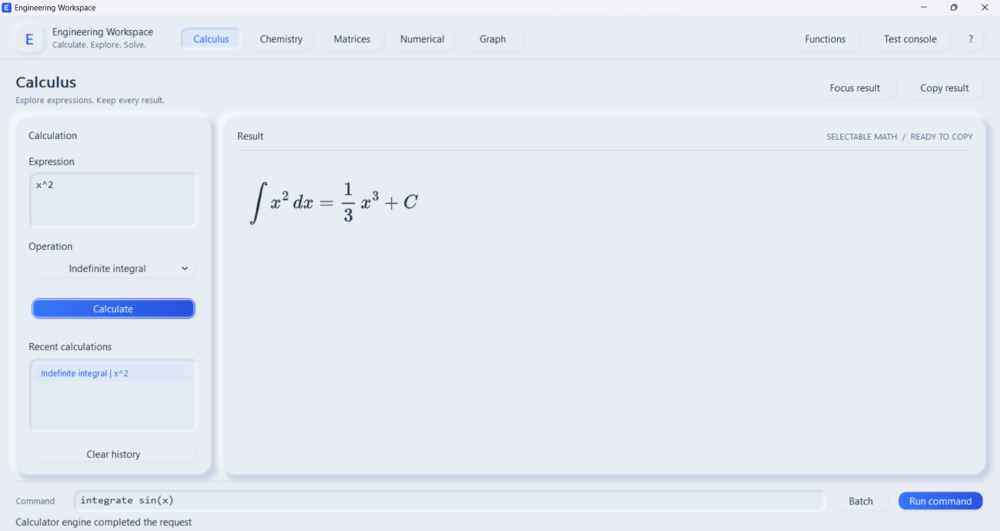
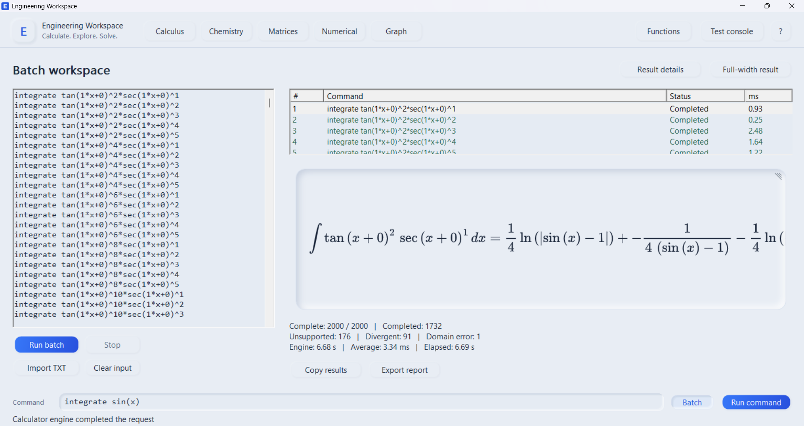
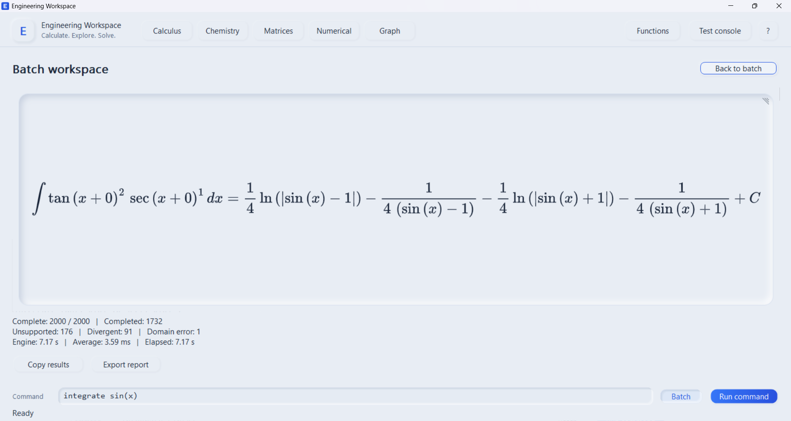

Symbolic calculus
Integrate and differentiate expressions, then inspect the returned result and available verification details.
Windows beta · Free download
Explore symbolic calculus, plot functions, and work through engineering calculations in one free desktop application. Your calculations run on your computer.

WHAT'S INSIDE
Engineering Workspace brings its calculation tools together in a desktop interface, with a separate batch console for longer sets of commands.
Integrate and differentiate expressions, then inspect the returned result and available verification details.
Plot functions and explore their shape with interactive graph controls.
Work with matrices, numerical calculations, and the app's chemistry workspace.
Run lists of calculations from the included console and save result reports in your user profile.
INSIDE THE APP
These screenshots show the Windows app handling a calculus calculation and a 2,000-command batch.


BUILT FOR YOUR DESKTOP
The mathematics engine runs locally. Once the application and its required Windows components are installed, routine calculations do not need a connection or an account.
DOWNLOAD
Download the free v0.1.1 Beta for Windows 10 or 11 x64. The installer creates Start Menu and desktop shortcuts. The portable ZIP runs from an extracted folder. On a computer without Microsoft Edge WebView2 Runtime, the installer needs internet once to install that Windows component. Calculations then run locally.
Free installer and portable ZIP.
Windows 10 or 11 · No subscription · Offline calculations
ABOUT
Engineering Workspace is a free application for students and anyone who wants to explore mathematics and engineering calculations. It is currently in beta development. Some difficult integrals remain unsupported, and a reported result should be checked in context before use.